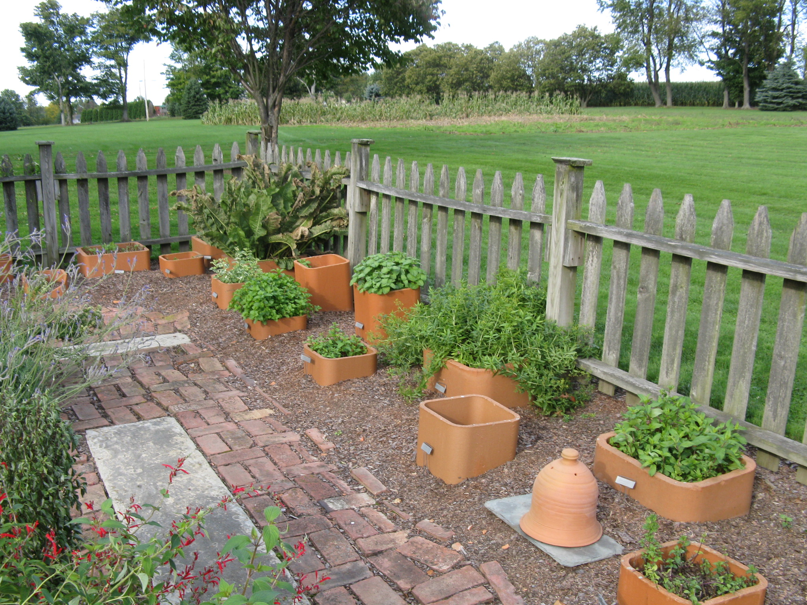
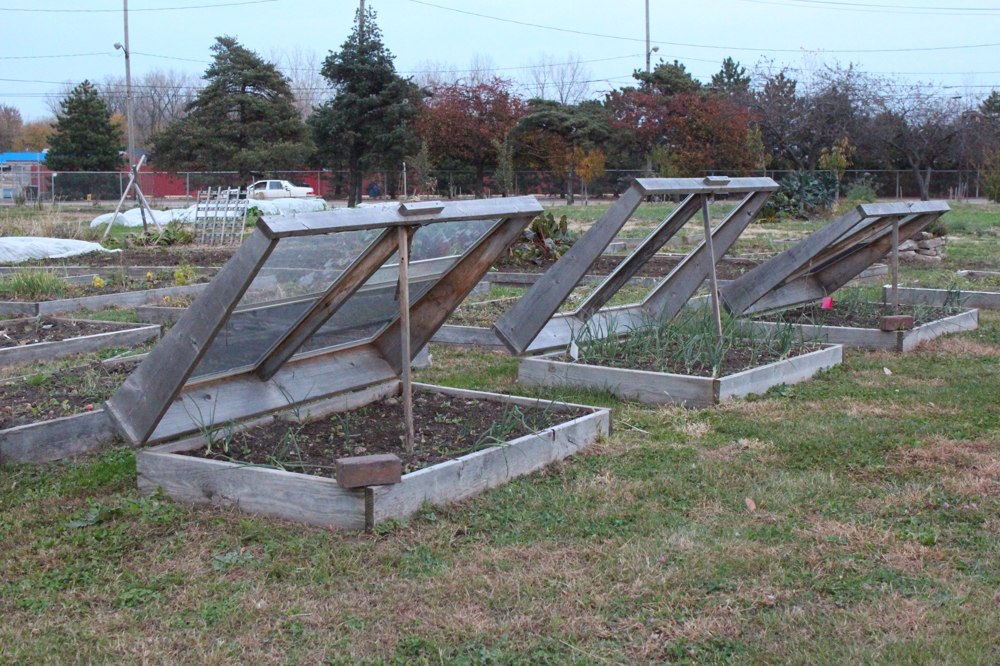
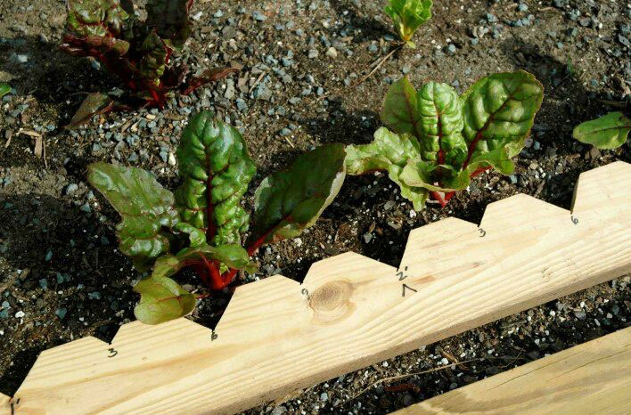
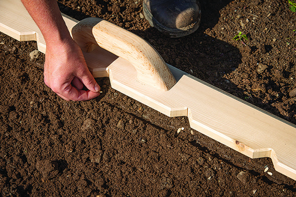

For more than a century, Ohioans have planted fresh vegetable gardens for their unbeatable flavor, freshness, nutrition, cost savings and variety - not to mention the personal satisfaction and opportunities and they bring to learn and experiment with growing and cooking different vegetables. In recent years, vegetable gardening is gaining increasing popularity as consumers become more interested in the source and quality of their foods.
Vegetable gardens' size and scope vary with gardeners' space and knowledge. Some grow them conventionally in rows or in large pots, while others simple plant them in containers on a patio or even colorfully interspersed in the landscape. Success doesn't require a horticulture degree, but a basic knowledge of gardening techniques and plants, a thoughtful garden plan and ongoing note-taking can dramatically improve results.
Planning the Vegetable Garden
A garden plan - either on paper or electronically - is key to saving time, money and frustration while promoting neatness and manageability. A plan details the types, amounts and locations of vegetable crops in the garden and serves as a partial record of the year's vegetable gardening. Plus, garden plans kept from year to year serve as a valuable record and learning tool.
Proper planning allows gardeners to determine the layout of the garden, the planting methods that will be used throughout the season, the number of plants and spacing requirements needed. How each gardener chooses to space plants in the vegetable gardens is determined mostly by how much space is available. Small-space gardeners often error in squeezing too many plants into a limited space. On the other hand, gardeners with large plots often waste space. The goal is to match the spacing plan to the plot size.
Use seed starting mix, not potting soil
Garden Site Selection
The location of a vegetable garden is critical for good production and high yields. Vegetable gardens can be tucked away in all kinds of places - a sunny spot along a driveway, a border along a patio, a fenced space in a backyard or a collection of pots near a kitchen door. When selecting a site, gardeners should consider environmental conditions, soil quality and access to water and other facilities.
- 6+ hours of sunlight per day
- Good drainage
- Nearby water source
- Consider slope
- Avoid being too close to walnut trees - tomatoes are particularly sensitive to this
- Sample the soil using nice representation
- Sample bags are available at the Extension office
- Denote what the area is to be used for
- Cost ~$10/ea
Requirements
Vegetables need at least 8 to 10 hours of sunlight per day. Adequate light ensures proper growth with sturdy stems and optimum yield of harvestable fruits. Vegetables grown in shaded areas generally have weaker stems and produce a lower harvestable yield than those grown with more light. A yard that has many trees will limit the location and size of the vegetable garden, unless major landscape alterations are possible. Heavily shaded areas may require trimming or removal of trees and shrubs to increase sunlight and air flow.
In addition to adequate sunlight, vegetable plants require proper air and soil temperatures, well-drained soils, nutrients and water for optimum growth. Soil temperatures vary throughout the year and can impact how quickly plants germinate and grow in the soil. Some vegetables are well-suited to cool soil and air temperatures while others require warmer temperatures for growth. To avoid early and late season frost damage locate the garden out of existing frost pockets (e.g., low-lying areas) if possible.
Water is essential for germinating seeds, establishing vegetable transplants and maintaining plants throughout the growing season. Vegetable gardens often require supplemental watering during periods of inadequate rainfall. Most houses and surrounding structures are equipped to provide an outdoor source of water when selecting a location. Ideally, a position near a home rather than along a back property line will offer greater convenience for water and access to harvest produce for daily meals.
Vegetable gardens may also require protection from wind, dust contamination, animals and other external factors. A hedgerow or fence are two possible solutions.
Vegetable Garden Soils
Soil Quality. Although soil building has been discussed at length in module 2, it is especially important to emphasize soil conditions for success in growing vegetables. Soils that are well-drained with ample nutrient and water holding capacity and relatively high organic matter content are best. A loose soil texture is especially important for root and tuber crops like beets, carrots, potatoes, sweet potatoes, and turnips. Many gardening problems can be minimized by maintaining a medium-textured, fertile soil. Quality soil promotes vigorous growth and minimizes stress. Regular additions of humus, composted manures, leaf humus, and cover crops increase activity of beneficial microorganisms and earthworms, increase air space, and improve nutrient reserves.
Soil Test. Most vegetables prosper in a pH of 5.8 to 6.8 (slightly acid soil). A soil test will determine the existing pH of the soil and provide guidelines for adding amendments, such as lime, fertilizer and organic matter. Lime and organic matter are best added in the fall, since these materials take time to react with the soil. Manures should be thoroughly composted before adding to the soil. If using fresh manure, add it sparingly and only in the fall. Remember to have the soil tested every three years.
Contaminated Sites. Gardeners should avoid placing a vegetable garden near potentially contaminated sites such as old painted structures or garages, heavily traveled roads, or former industrial sites. Soil may also be contaminated with heavy metals from automobile and equipment exhaust or pesticide use prior to the 1950’s. Gardeners should test these suspected soils for lead, cadmium, arsenic, other heavy metals and possible contaminants. Lead binds to clay particles in the soil and can be transferred to leafy vegetables and soil crops through dust and direct contact. Washing vegetables before consuming them eliminates this potential problem. Increasing the organic matter content of the soil and maintaining a pH of above 6.5 significantly reduces lead toxicity by binding lead and making it insoluble in water (Angima, 2010). Raised beds and container gardening may be appropriate for locations where lead levels exceed 400 ppm.
Time & Size Considerations
When determining the size of the vegetable garden, consider limitations to the garden site as well as the amount of time that can be devoted to garden activities. Container gardens are an option for apartment dwellers or where the back porch or patio is the only sunny area. Raised beds are ideal for gardens with poorly drained or infertile soils and in urban areas with limited space. Terraces may be constructed to hold garden soil in place on steep slopes.
Beginners often underestimate the time involved in vegetable gardening. Even seasoned gardeners ambitiously plant a large garden in the spring but later lose interest in the heat of summer. Consider starting with a 10' x 10' or 10' x 20' plot. A larger 20' x 20' (400 sq. ft) garden requires a minimum of a half hour per day early in the season. In late spring and summer, this garden plot will require at least a half hour every two or three days. For gardeners interested in freezing and canning fresh produce, plan on a 20' x 40' site with carefully chosen cultivars that preserve well.
Site Preparation
New site preparation can be a large physical task if existing plants, sod, rocks or brush must be removed. Ideally, preparations should be scheduled one season in advance to minimize weed populations. Here are the steps to prepare a turf area and convert it to a garden:
- Test the soil to determine nutrient levels.
- Remove existing foliage. Kill it with an herbicide containing glyphosate or cover the area with black plastic for one to three months during the growing season.
- Mow the area after the vegetation dies, cut up the sod with a spade and till thoroughly.*
- Add lime, if needed, and till again.
- Remove rocks, roots and other foreign objects.
- Add fertilizer, based on soil-test recommendations. Rake the surface smooth and plant.
Removing and discarding the sod before tilling will make working the soil much easier but may require adding organic matter. If coarse organic matter is used to improve the soil, remember that decomposition occurs fastest when the organic matter is close to the soil surface. Burying coarse organic matter results in slower decomposition.
When preparing a new site, consider double-digging the area to provide optimal soil conditioning. This intensive method involves removing soil to the depth of one spade blade and setting it aside for later. Next, dig down an equal distance, breaking up the soil then returning the top layer and mixing the two together.
Working the Soil
While fall and spring are the two customary times to till garden soil, fall-tilling presents many advantages over spring-tilling. Soil moisture and temperature conditions favor the decomposition of organic matter that is turned under in the fall. Some disease organisms, insects, and perennial weeds can be reduced by tilling in the fall. Winter's alternating freezing and thawing conditions break up tight soil aggregates found in heavy clay soils and improve soil structure. Plus, soil moisture levels are improved when roughly tilled soil traps snow. Finally, lime has more time to react with the soil when added in the fall.
Till garden soil when it is neither too wet nor too dry. To test the soil moisture level, take a handful of soil and squeeze it. If it remains in a tight ball when you release your grip, it is too wet. If it crumbles, it is ready to till. Although rototillers can reduce the physical effort in soil preparation and cultivation, they also can ruin good soil structure. Do not overtill, or a compacted layer or hard pan can form just below where tines bite into the soil resulting in poor soil drainage. To avoid problems, till only for an intended task, such as preparation for planting or preparing a new bed.
Gardens arranged into beds do not need to be deeply tilled every spring or fall. In fact, this deep tilling may upset the microorganism balance by burying coarse organic materials and preventing their break down from insects and microbes at the soil's surface. For gardens on a slope, do not till them in the fall and consider planting cover crops to reduce erosion.
Vegetable Garden Sanitation
- If you don’t clean up, the disease pressure over the season will be the starting point for the next season
- Don’t put removed plants into home compost piles - they don’t get hot enough to kill any pathogens
- Fungal pathogens are particularly an issue for gardeners who simply till the old plants back into the garden
- Each year, start a new compost pile. The 2018 pile becomes the 2019 compost for gardening.
Crop Selection
More than 40 kinds of vegetables can be grown in Ohio. Selecting what to grow depends on a variety of preferences, such as flavor, available space, nutritional value, or how well the crop cans or freezes. Homegrown crops are an excellent way to introduce new foods to the family. It is difficult to turn down foods that were nurtured to harvest by family members. If nutritional value is the primary interest of the gardener, the best vegetables for vitamin and mineral content are listed here:
Beginning vegetable gardeners should consider easy-to-grow crops such as asparagus, beets, bush beans, cabbage, carrots, leaf lettuce, globe radish, New Zealand spinach, onions, leeks, peppers, summer squash, sweet potatoes and tomatoes. For space economy, try root vegetables that make the best use of available soil. According to OSU Extension research, beets, summer squash and tomatoes are the most productive vegetables. Dieticians recommend a balanced selection of garden vegetables including two leafy green or yellow vegetables (lettuce, spinach, chard, kale and squash), two pod vegetables (peas and beans), two root crops (carrots, beets, turnips, parsnips, radishes and salsify), plus tomatoes, cabbage and any personal favorites.
Home canning and freezing vegetables is a great way for gardeners to ease their food budgets. Plan to plant extra vegetables, and preserve them at their peak early in the season rather than the end of the season when quality drops, disease takes its toll and special handling is required. On the other, relying on garden surplus for canning and freezing often results in an insufficient supply.
Heirloom Varieties
Heirloom vegetables are open-pollinated - meaning their seeds will produce plants with most of the characteristics of the parent plant. Many heirloom varieties were preserved for generations by home gardeners who saved seed from their family gardens each year. Other seeds travelled around the world in the pockets or letters of immigrants, which is why, though the tomato evolved in Central America, there are varieties from Russia, Italy, Japan, France, Germany and Ohio. Many have adapted to local growing conditions and offer exceptional flavor. Often, the plants are large or slow to produce a crop. Some may not exhibit the disease resistance or tolerance of modern-day hybrids, possibly resulting in less produce and requiring more care. Some seed-saving organizations keep these historic seed lines alive, and many seed companies are reintroducing heirlooms to meet consumer demand. In addition, several garden centers and historical societies offer transplants of common heirloom varieties.
Space-Saving Varieties
Smaller gardens and container gardens are well-suited to varieties and cultivars that offer high productivity in the allotted space. Bush-type plants of typically vining vegetables, such as squashes, cucumbers, tomatoes, and beans, are good choices. A five-gallon container provides adequate space for most vegetables. Vegetables grown in containers will require more frequent watering and fertilization.
Hybrids
Plant breeders constantly work to improve vegetable crop qualities such as yield, color, flavor, storage qualities, days to harvest, and resistance to a wide variety of diseases. Each year new seed selections are offered by companies from all over the world. Those that carry the label All-America Selection (AAS) Winner have been evaluated by experts and rated outstanding performers in trial gardens across the country. Over 700 AAS Winners have been grown in trials across the country since 1933.
Selecting for Disease Resistance
Disease resistance is a quality many gardeners look for in vegetable crops, especially when specific diseases are known to be a local problem. A cultivar labeled disease-resistant indicates a lower susceptibility to infection by a particular disease under normal conditions. It does not mean immunity. Disease-tolerant indicates that a plant can withstand some disease infection without severe reduction in crop quality and harvest. Cultivars marked disease-resistant and disease-tolerant make smart choices for the gardener interested in limiting the use of pesticides.
In online and print seed catalogs, many abbreviations are used to describe hybrid vegetable cultivars' various characteristics. For example, the following is an explanation of the abbreviations used to describe the tomato cultivar 'Skyway' (F1) F3, N, ToMV, TSWW, TYLCV, V (D) 78 days.
Other abbreviations that indicate disease-resistant qualities may include:
Seasonal Crops
Most vegetable crops can be described as cool-season or warm-season crops.
|
 Cloches and clay |
|
 Cold frames |
Cool-season crops are those that germinate and grow at lower temperatures of spring and fall and are not injured by light frost. Experienced Ohio gardeners can begin the vegetable growing season on St. Patrick’s Day (March 17), weather permitting, with the planting of peas, spinach, and onion sets. Insulating techniques, like cold frames, hot beds, row covers, and cloches, are often used early in the spring to protect young plants from frost and to extend the harvest of cool-season vegetables late into the fall and early winter.
Cool-season crops not injured by light frost are asparagus, broad bean, broccoli, brussel sprouts, cabbage, collard, garlic, horseradish, kale, kohlrabi, leek, onion, pea, radish, rhubarb, shallot, spinach, turnip. Crops injured by frost but intolerant of temperatures above 70 F are beet, carrot, cauliflower, celery, chard, Chinese cabbage, endive, lettuce, mustard, parsnip, potato, Swiss chard.
Cool-season crops generally perform poorly during periods of extended hot temperatures. Leaf lettuce and other greens bolt, producing flowers and bitter foliage. Peas stop producing pods. Other crops, such as onions and potatoes, require cool weather to become established before producing the harvest during the summer months.
Warm-season crops do not grow well at temperatures below 50 F and are killed by frost. Seeds of these vegetables will often rot if planted in cold, damp soil. Not only is their growth retarded by cool weather, but fruit set will be delayed. Warm-season crops for planting after danger of frost is past are cantaloupe, cucumber, eggplant, lima bean, New Zealand spinach, pepper, pumpkin, snap bean, squash, sweet corn, sweet potato, tomato, and watermelon.
Perennial vs Annual Crops
Some vegetable crops such as rhubarb and asparagus are perennials and will persist from year to year. These crops should be planted away from areas tilled for annual vegetable crops.
Starting Crops
Ohio has a limited growing season with frost dates varying across the state. In general, the last spring frost is between mid-April and mid-May. Likewise, the first fall frost ranges from early October to early November. To be successful, gardeners must consider local frost dates, soil conditions and the window of growing days when determining the ideal time to sow seeds or plant transplants. In addition, record-keeping from year to year can help refine these planting dates. Here are factors to consider in planning the planting times:
- Temperature: Cool-season plants will not produce quality crops if planted too late. On the other hand, warm-season crops will not produce quality crops if planted too early. Planting too early in cold, moist soil may result in rotted seeds or stunted transplants.
- Growing days: There must be an adequate number of seasonable days for the plants to mature before harvest. The gardener who plants a crop too early runs the risk of losing a crop to frost damage. Likewise, planting too late in the season may result in no harvest if there's an early winter. Garden calendars provide guides for the best planting dates for vegetables, and seed packets typically list the "days to maturity" information.
Sourcing Seeds & Plants
Winter months offer gardeners the opportunity to leisurely examine garden magazines, books, paper and electronic seed and garden catalogs to plan for spring planting. The selection of vegetable crops including improved and newly released cultivars from catalogs is much wider than that found in local garden centers. Gardeners should note that these catalogs vary widely in the amount of reliable information they provide on disease resistance, days-to-maturity, description of both plant and fruit size, drought and heat tolerance, flavor, germination, and cultural requirements. Reliable seed and plant sources should be kept on hand as reference materials.
Transplants
Gardeners often like to get a head start on growing certain vegetables and use transplants instead of directly seeding into the garden soil. Transplants are small seedlings that are several weeks old and can be planted into the garden. Transplants may be purchased or grown from seed as outlined in the plant propagation module.
To properly schedule transplants for the garden, determine when the transplants will be planted in the garden. Next, determine the time needed for germination and seedling growth. Then working backwards, determine when seeds need to be started indoors. Keep records so you can modify the seed-starting time in the future, if necessary. The exact time to start seedlings will vary a little based on conditions in the home, the light source, and the cultivars grown.
When buying vegetable transplants, look for sturdy, full plants with healthy white or tan roots. The roots should fill the pot, but they should not be pot-bound. Do not purchase transplants that are diseased or infested with insects. Remove flowers and small fruits from transplants to ensure more vegetative growth before fruit production begins. Young plants that are allowed to produce fruit may not develop properly because the plant’s energy is directed to fruit production instead of root and stem development.
Harden off transplants that are grown from seed before planting. While plants are indoors, gradually reduce the amount of water and fertilizer applied. Gradually increase the exposure of young plants to the outdoors by moving seedlings to an area like a shaded porch. Move the plants back indoors at night if temperatures go below 50 F. Cool-season crops can tolerate cooler temperatures, once they have been hardened off, but do not expose seedlings to near freezing temperatures. This can cause some plants to button (form small heads of broccoli or cabbage) or bolt (form flowers instead of vegetative growth).
Gradually increase the length of time the plants are in sunny or windy areas until they are entirely outdoors. This acclimation process can take up to ten days. Transplant seedlings to the garden on a cloudy day or late afternoon, early evening if possible.
A group of vegetables that easily transplants and is suitable for starting indoors includes broccoli, cabbage, cauliflower, celeriac, eggplant, lettuce, sweet potato slips, onion, leek, tomato, and pepper. The following group requires more care with transplanting: beet, celery, chard, melon, and squash. Beans, corn, cucumbers, peas, and okra should be direct-seeded when soil conditions and temperature are right.
Direct Seeding
Before planting seeds, be sure the soil is thoroughly worked and free from clumps. This will ensure the necessary contact between seeds and soil. Stake off rows according to your plan and be sure to identify the crop planted with markers. Plant at the proper depth and spacing so excess thinning will not be necessary. Save some seed for planting later in case unforeseen conditions result in poor germination.
For fall, consider planting a second crop of cool season vegetables in late summer. Make sure to allow adequate time for the crop to mature. When planting seeds for a fall crop, water the seeds more often than in the spring, since the summer soil is usually warm and dry. Provide some shade to help retain moisture. Cover the seedbed with cardboard or newspaper. Check the seedbed daily and remove the covering when the first seeds sprout. Keep the bed consistently watered until all the seedlings are established. Pre-sprouting (enclosing seeds in a wet paper towel in a plastic baggie and placing in a warm location until seeds sprout) also ensures good germination of cool-season crops, especially in the hot, dry soil of August.
Planting Depths
For spring planting of seeds indoors and outdoors, follow directions on the seed packet. A general rule of thumb is to plant the seed twice as deep as the diameter of the seed. This means that most large bean or squash seeds are planted about one-inch deep. However, if the package recommends the seeds not be covered with soil, just sprinkle them on the surface and lightly tamp (pack down) them for good soil contact.
Plant transplants in the garden at the same level as they were growing in the container. Tomato and broccoli plants are exceptions to the rule. Tomatoes will form roots all along their stem if covered with soil. If tomato seedlings are spindly, plant them in trenches so only a few inches of the plant are above the soil level. Broccoli also will form some roots along its stem when covered with soil.
Garden Strategies
More information:
- Growing Vegetables in Containers (YouTube Video) - Growing vegetables in pots is a great way to get fresh produce without taking up much space. Plus, you know exactly what went into producing the food you eat. Follow these easy steps to get your garden started. (From Kansas State University Extension)
- Use potting mix
- Will need to fertilize after 45-60 days
- Can mix so that the plants are tighter together than in beds.
- Best to use dwarf varieties of taller plants (e.g., tomatoes)
- Water well
Succession Planting
Gardeners can adopt a number of succession planting methods to maximize garden space and allow for a continuous harvest from spring through fall.
Traditional succession planting involves replanting a different crop as soon as one crop is harvested. With this method, there is never an unplanted area in the vegetable plot.
Staggering planting dates is another method in which crops such as bush beans are planted every two weeks from mid-May to the beginning of August.
Staggering varieties involves a single planting of several different varieties of a vegetable with varying maturity dates. This method works well for cabbage, corn and tomatoes.
Row Planting
|
 |
|
 |
Row planting follows recommendations commonly found on most seed packets or based on dimensions of cultivating equipment such as tillers and push cultivators. This method is fine for gardens where space is not a limiting factor and where cultivation is to be done largely by mechanical means. Single rows of crops are separated by wide bands of bare soil. On farms, this allows space for cultivating, fertilizing, and harvesting with large equipment. To plant in straight rows in smaller gardens, use a string stretched between two stakes as a guide. Sow seed according to the seed packet directions, cover, tamp, and water. Thin plants according to the spacing recommended on the packet after seedlings have their first true leaves.
Easy to Make: A planting board is an easy to use tool that can help get the proper spacing when planting seeds or plants in your garden.
Hill Planting
Larger vegetables, such as melons, squashes and cucumbers, are planted in hills or mounds of amended soil about one foot in diameter and six to 10 feet apart depending on the crop. Generally, four plants are allowed to grow from a hill. With this technique, the mounded soil heats sooner and hastens the germination of warm-season crops. These plants, particularly winter squashes and pumpkins, are allowed to sprawl and require considerable space.
Intensive Planting Methods. Intensive gardening requires careful planning and minimizes wasted space in more traditional plant-by-row methods. Ideally suited for small-space gardens, these methods carefully space plants, so they mature without competing for nutrients and water from adjacent plants. Intensive gardening also involves succession planting to replace crops when they begin to decline.
Square-Foot Gardening
One of the most widely known intensive techniques is the square-foot gardening concept developed by Mel Bartholomew and published in his book Square Foot Gardening in 1981. The square-foot method is promoted as using one-fifth of the space, time and money used by conventional methods. Bartholomew prescribes building 4' x 4' raised beds then using stakes and string to divide them into one foot squares. Each square foot is planted with one to 16 plants depending on the vegetable plant's mature size. For example, a square might be filled with one tomato plant or 16 radish plants.
Square-foot gardening reduces thinning and cuts down on watering and weeding through the efficient use of space. Seeds and plants are spaced carefully, so they shade the soil, reducing evaporation of water and the amount of sunlight available for weed growth. The growing area can be easily reached from all sides requiring no special gardening equipment and lessening maintenance. The method is especially popular with new gardeners and youth.
More information:
- Raised bed box needs to be at least 6” high
- Sunny site with easy access to water
- Weed cloth (landscape fabric) on grass, and then metal screening. The metal screening keeps moles out.
- Media is Compost, vermiculite, & peat moss
- Mixed in compost roller
- Using ½” plastic to make a grid (1’x1’ squares) makes it easy for spacing. This can also be used for drip irrigation.
- Planting annuals in the cinder blocks brings bees which helps with pollination.
Wide-Row Planting
Wide-row planting is best suited to small plants, such as spinach, bush beans, beets, lettuces, greens, and carrots. Spread small seeds thinly over growing area. Rake, tamp, and water. Thin plants according to the recommendations provided on the seed packet or in gardening references. For large plants, such as bush beans, plant staggered rows to fill the area allotted. Keep the space between the rows the same as the space between the plants in a row. For example, if the packet directions say to thin seedlings to 8 inches apart in the row, space them so they’re separated by 8 inches in all directions. A little extra space can be provided by staggering rows within the wide row or bed. Careful planting and thinning will result in crops reaching their potential.
Raised Beds
Raised beds' offer solutions to many gardening problems and should be considered when the following problems exist:
- Poor drainage that is too difficult to remedy.
- Garden soil that is very heavy (high clay content) or very sandy.
- No space is available except on a rooftop or patio.
Raised beds provide the following advantages compared to planting directly into the ground. The soil warms earlier in the spring and has better drainage. Cultivation is easier because the soil is loose and plants can be spaced closer due to deeper soil levels.
More information:
- Raised Bed Planting (Daytime Columbus) (YouTube Video)
- Allows for concentrating the efforts into a smaller area
- Never step into the bed
- No wider than 4’; 3’ if working with kids
- Raised beds warm up faster in the spring
- Raised beds drain better
- Probably need to be watered sooner.
- Don’t recommend railroad ties or other woods which could allow poor chemicals to leach into the soil.
Vertical Gardening
To further save space, grow plants vertically. For example, cucumber and winter squash take up too much space to be justified in a small plot; however, trellises, cages, stakes, tepees, twine, and nearby fences can effectively support these plants. Vertically grown vining crops can be positioned closer together when a trellis is used. Place tall and trellised crops on the north side of the garden to avoid shading other crops. Plants tolerant of shade, like lettuce and other greens, can be grown on the north side of these tall crops to take advantage of shade provided during the hottest part of the summer. Vertical supports do not need to be expensive. They can be made from scrap lumber and other discarded materials. Additional support may be required as large, heavy fruit mature. Expandable nylon netting placed around the maturing fruit and tied to the trellis can provide the extra support needed. This prevents fruit from prematurely breaking from a vine.
Interplanting
Interplanting involves growing two different vegetables in an area at the same time. This method of planting is another way to save space. Try interplanting flowers and herbs among vegetables to add aesthetic appeal to a backyard vegetable garden. These flowers and herbs in the vegetable garden also attract beneficial insects that will help control pests. For successful interplantings, consider plants with similar nutrient and moisture requirements. Try some of the following combinations:
- Plant radish and carrot seeds at the same time. Radishes germinate and grow quickly. They mark the rows of the carrots that take much longer to germinate and mature. Radishes are harvested as the carrots are just getting established.
- Leaf lettuce is a good crop to interplant among larger vegetables since it tolerates shade and has few pest problems.
- Leeks may be planted among sweet potatoes. The sweet potato leaves help shade the developing stem.
- Surplus onion sets may be placed around other plants as a source of scallions.
- Young tomato plants or pole bean seeds may be planted among declining pea vines to replace them on the trellis. * The spent pea vines may be used to mulch the new crop.
Watering Vegetable Crops
Water is necessary for all stages of vegetable growth from seed germination through flowering, fruit maturation, and seed development. Vegetables require water at specific times during their development for best quality and to reach their full production potential.
Understanding plant needs: Root crops need a constant supply of water during root development. Fruit crops, like tomatoes and peppers, should not be allowed to wilt between flowering and fruit production. In corn, adequate water during the tasseling stage results in better ear development.
Monitoring rainfall and soil moisture: Soil moisture levels vary with temperature, wind conditions and soil type. Check local weather forecasts to monitor area rainfall levels. For more accurate information, place a rain gauge near the vegetable garden. Since vegetables generally require one inch of water per week for normal growth, supplemental water is needed when rain levels fall short.
Timing irrigation: It is best to water vegetable crops in the morning for two reasons. First, plants need moisture during the day while they are photosynthesizing. Second, plants need time for their leaves to dry before sunset. At nighttime, plants with wet leaves are vulnerable to fungal disease infection. If evening is the only possible time to water, avoid splashing water on the foliage by directing the flow to the soil.
Watering deeply: Water vegetable plants deeply by soaking soil to a depth of five to six inches. Apply water at a rate of about one-half inch per hour to prevent runoff. If the rate of application of a watering system is unknown, use the tests in the lawn module to determine how much water is delivered. On the contrary, avoid frequent, light sprinklings. These result in shallow root growth that makes crops more susceptible to drought stress.
Evaluating irrigation systems: The ideal watering system delivers the water to the soil without getting the foliage wet. Emitter-type drip irrigation systems, soaker hoses, and hand-held watering wands work well. Emitter-type or drip irrigation systems work well with container gardens and all types of garden vegetables. These systems use a series of plastic hoses and directional devices that apply water directly to the root zone of plants, keeping water off foliage and away from weeds that may compete for available moisture. Drip irrigation systems rely on low pressure to operate and use about half the amount of water compared to overhead sprinklers. Care must be taken to avoid damaging irrigation lines when digging and cultivating. To prevent damage to the tubes, mark their location. Mulch to control weeds and reduce cultivation. Soaker hoses release a very slow trickle of water and must be strategically placed throughout the garden bed. They release water to a rather restricted area depending on the soil type, so careful placement is important. These hoses keep water in the root zone and off the leaves. They reduce loss of moisture through evaporation. Installation does not require the planning of emitter systems, and these usually can be put in place at any time of the season. Soaker hoses can be buried two- to four-inches deep, if put in place before planting. Here, water lost to evaporation is reduced, but buried hoses may be cut accidentally. It takes a long time for adequate water to be delivered to the area. For that reason, it is recommended that the garden be divided into sections so one hose does not water the entire plot.
Many larger gardens are watered by stationary or portable sprinklers. Check uniformity of application. Overlap distribution to ensure uniformity. Raise the oscillating-type sprinkler by placing it on some type of platform. Although oscillating sprinklers are inexpensive and require no planning; low water pressure and wind can make this system wasteful. Morning is the recommended time to use this system so plant foliage can dry before evening.
Fertilizing Vegetable Crops
Soils with a continuous supply of moisture and nutrients produce high quality vegetables. An annual fertilization program or maintenance fertilization program is necessary to keep soil nutrients at desired levels, especially the three primary nutrients nitrogen, phosphorus and potassium. Nitrogen (N) promotes vegetative growth and produces healthy, dark green leaves. Phosphorous (P) produces strong roots, stimulates flowering and seed formation. Potassium (K) contributes to overall plant health.
Research shows the average garden soil may lose one to three pounds of N, one-half to 1-1/2 pounds of P, and two to four pounds of K per 100 square feet of garden soil by the end of a growing season. A soil test will confirm results and lists fertilization needs. By testing the soil in the fall, gardeners have the opportunity to add lime if needed and allow it to react with the soil before spring planting.
To further improve soils, gardeners should annually add two to four inches of organic matter such as leaf humus, compost and composted manure. This organic matter is the living component of the soil and affects the physical and chemical properties of the soil like soil structure, aeration, nutrient availability, water absorption, among other beneficial aspects. Organic matter also adds small amounts of nutrients and decreases leaching of nutrients from the soil. Plus, it provides food for soil animals and microorganisms that decompose coarse, organic materials and add life to soil.
Fertilizer Types. A fertilizer is any substance that can provide nutrients to growing plants. Fertilizers may be organic (derived from plant or animal sources) or inorganic, also known as synthetic (those that undergo a manufacturing process though some may be naturally occurring minerals). While plants are unable to distinguish whether nutrients are derived from organic or inorganic fertilizers, experienced gardeners use both types to optimize soil and plant health.
Generally, synthetic fertilizers are highly soluble, concentrated forms of nutrients that are readily available for plant use. They are often applied in the spring as starter fertilizers or when plants need nutrients quickly. Organic fertilizers are less soluble and have lower concentrations of nutrients that are slowly released over time by soil microorganisms, especially during warmer summer months when microbes are more active.
Fertilizers may be complete by containing the three primary nutrients N-P-K (example: 8-16-16) or incomplete, where one or more of these nutrients is lacking (example: 12-0-0). Common synthetic fertilizers include 5-10-10, 10-10-10, superphosphate, and nitrate of soda. Common organic fertilizers include blood meal (12-0-0), bonemeal (3-15-0), greensand, fish emulsion (5-2-2), and composted manures.
While not all vegetables require the same type and amount of nutrients, a soil test will determine both the composition and amount of fertilizer to add. Gardeners who employ intensive gardening techniques will need to add a little extra fertilizer after the removal of a particularly heavy feeding crop. Many gardeners make the mistake of over-fertilizing. This practice can lead to nutrient deficiencies because of nutrients binding to the excess elements. Restoring nutrient balance after applying too much fertilizer is nearly impossible in the short run.
Fertilizer Application Methods. Starter fertilizers are generally water soluble and mixed with irrigation water to hasten establishment of young plants and promote rapid growth. These fertilizers can be applied to seedlings grown indoors as well as those recently transplanted into the garden. Young plants can be fertilized after the first true leaves appear at half the fertilizer label’s recommended rate. Once moved to the garden, young plants continue to benefit from the application of a starter fertilizer.
Row or band fertilizing (banding) is a common and economical method of application. Narrow bands of granular fertilizer are applied three inches deep alongside the plant row. Work the fertilizer into the top two to three inches of soil. Be careful not to damage plant roots by applying fertilizer too close to roots or when working fertilizer into soil.
Fertilizer can be broadcast, or sprinkled uniformly over the entire garden area before planting. When followed by turning the soil, this method gets the nutrients to where the roots can absorb them. Fertilizer can be lost by leaching or taken up by weeds if the gardener delays planting the garden.
Fertilizer can be applied around plants growing in the garden in a process called side-dressing. Here, the idea is to spoon-feed nitrogen to the crop according to stage of development, reducing the chance of fertilizer leaching out of the soil profile before the crop can uptake it. Nitrogen may become limited following a leaching heavy rainfall. Make applications to leafy and cole crops 3-4 weeks after emergence when they are well-established. Fertilize sweet corn when it’s 12 to 15-inches high. Fruiting crops, such as tomatoes and cucumbers, should be side-dressed after the first fruit is set.
Fertilizers are also available in water-soluble form and are promoted to “feed” by applying to the foliage (foliar feeding), however remember leaves do not absorb much water; it’s the function of the roots to absorb, therefore water soluble fertilizer applications are best soil applied near the root system of the plant. Liquid fertilizers often have a high percentage of nitrogen that can delay fruit production in sensitive crops like peppers and tomatoes if applied to early in plant development, which may cause these plants to abort and drop bloom. However, they can be used as a ready source of nitrogen for a plant that is showing a nitrogen deficiency.
Be careful when applying fertilizer during hot weather when soil moisture is limited. Water tends to move toward the fertilizer (a salt) and away from the roots. The roots desiccate or “burn.” Never allow granular fertilizer to remain in contact with foliage; it will “burn” the foliage.
Harvesting Vegetable Crops
Timely harvesting will result in superior produce and help reduce plant diseases and pests that thrive on overly ripe vegetables. In some crops, regular harvesting will even promote continued production. On the contrary, allowing squash, cucumber and okra to grow beyond the ideal size reduces these plants' productivity. Besides, who wants oversized produce with its decreased flavor and textural quality?
Sanitation & End-of-Season Cleanup
An important part of the gardening season is the late fall cleanup. To begin, remove all stakes, string, water bottles, plant containers, cans and paper from the garden. Next, remove all diseased and pest-infested plants to prevent the spread of disease. Diseased plant materials should only be placed on the compost pile when it's active and heating to 140 F (the kill temperature for disease-causing organisms). Rocks, plastic transplant containers, wooden or plastic stakes, bottles, milk jugs and other objects should also be removed. This clean-up will not only make the garden more tidy but will also reduce hiding places for insects, slugs and other pests.
Fall also is an excellent time to incorporate organic matter into garden soil. Chop and turn under dead plants and leaves with compost, composted manures and leaf humus. Plant a cover crop of cereal or winter rye in late August through October. Annual rye and hairy vetch should be planted in September or early October to help prevent erosion and to further improve soil tilth. Cover crops should be turned under before they go to seed or two weeks before crop planting in the spring. Ideally, the garden should be clean and green when November arrives.
Wildlife in Vegetable Gardens
Deer, raccoons, woodchucks, rabbits and squirrels may browse in the vegetable garden. The first line of defense against wildlife is to keep them out of the garden area by locating away from wildlife homes or installing fencing. Fencing may need to be buried two to three feet to deter some pests (e.g., woodchucks) from digging under the fence.
Commercially available products designed to deter animal pests through scent, sound, or touch are usually only partially effective. Once the animal becomes accustomed to the deterrent, it won’t work as well. A fence around the garden area or the presence of a cat or a dog may be more effective choices for control. Do not place food or salt out for animals, as either might attract those animals considered as pests to the garden.
Vegetable Insect Pests
Insects can cause significant damage to vegetable crops and can be controlled by applying integrated pest management (IPM) by first adopting preventive practices, properly identifying pest as they emerge, monitoring their damage then chasing the most effective technique (e.g., physical removal, pesticides) to control the pests with the least impact on the environment.
When it comes to prevention, barriers are a great way to keep insects from reaching crops. Barriers include cardboard collars, aluminum foil, row covers, and plastic. Aluminum foil or reflective plastic mulch is used to confuse aphids that transmit viral diseases to squash. Use collars of various materials to prevent cutworms from chewing through the stems of recently transplanted seedlings. Milk cartons or paper tubes can also be used as collars, depending on the size of the transplant.
Lightweight versions of row covers originally developed as season extenders have been developed specifically to keep insects off plants. These new products provide some protection from cold temperatures but also keep out harmful insects such as aphids, beetles and cabbage loopers. The material works best when used to protect vegetables, such as greens, that don't require pollination for development of the fruit. Otherwise, the row covers must be removed, so insects can pollinate crops like cucumbers and squashes when they begin to bloom.
Traps and lures are used to monitor insect populations in the garden as a part of an integrated pest management program (IPM). The floral scents or pheromones used in the traps have no harmful effect on other animals or humans. Other traps use shape or color as the attractant. Sticky red balls mimic the size and shape of apples. Whiteflies are attracted to anything that is the shade of yellow traffic signs. If a sticky material is coated onto a yellow surface, large numbers of whiteflies can be trapped. Commercially available sticky traps are used primarily to warn the gardener of a problem. They are generally ineffective as a control treatment. In some cases, the attractant may actually lure more insects into the garden.
When using chemicals in the vegetable garden, remember that you are working with food crops. It is the user’s responsibility to read and follow label instructions on all pesticides. Because pesticide registration with the EPA is constantly changing, it is critical to understand that the crop must appear on the label of the pesticide being used. Accurate garden records will provide the information needed for waiting the correct numbers of days between pesticide treatment and harvest.
Vegetable Diseases
For disease control, IPM advocates proper cultivation techniques as the first line of defense. Diseases are caused by microscopic organisms and are more difficult to identify than insect pests. Common garden diseases of vegetables include blights, anthracnose, mildew, clubroot, stem and fruit rots and mosaic virus. Vegetable crop diseases can be reduced by following good gardening cultural practices mentioned throughout this chapter. To review, here is a list of practices that reduce disease infection:
- Choose disease-resistant varieties.
- Use sterile seed-starting media.
- Space plants at recommended distances.
- Use watering practices that keep moisture off foliage as much as possible.
- Maintain good garden soil structure and nutrient levels.
- Do not walk through the garden after it rains or when foliage is wet to avoid spreading disease-causing organisms.
- Keep weeds and debris out of the garden and surrounding areas.
- Remove and destroy any diseased plants immediately.
- Practice crop rotation.
- Do not smoke in the garden. Wash hands after smoking and before gardening.
In addition, controlling garden insects is important for disease control. The wounds that insects make in plant parts cause openings in which disease-causing organisms enter. Some insects carry diseases and infect plants as they feed. Many diseases can be controlled by using the previously listed cultural practices. However, there are some diseases that cannot be controlled by these methods. Some plant groups are more susceptible to specific diseases than others. To decide if pesticides should be used to control a plant disease and to determine the chemical to use, ask and answer the following questions:
- Is there a specific disease identified as the cause? Choose a pesticide that is effective in controlling that disease.
- How extensive is the crop damage? Can it be tolerated as a blemish?
- Is the disease in a stage where the selected chemicals can be effective? Diseases can be stopped, but not cured. * Treating when the infection is limited may prevent the disease from progressing to a serious level. Fungicides are used primarily to prevent infection from occurring.
- Are there other ways to control this disease? Removing infected leaves may limit the spread of the disease.
These questions point out the need to identify the disease and know its life cycle. Plant diseases can be very tricky to diagnose, fooling even professionals. A quick, incorrect decision to use a product may result in no effect on crops, wasted money, and unnecessary exposure to a pesticide. Trained garden center staff and Extension personnel can help identify diseases and pests. Take diseased specimens to them for identification.
Fungicides. Many organic and non-organic chemicals are available for disease control. These chemicals must be applied before infection occurs. Products available to the home gardener include foliar sprays and powders which are applied to plant leaves and branches. Some products are effective against many disease organisms and are called broad-spectrum products. Other products control only a few kinds of organisms. Foliar sprays or dusts are applied to leaves and branches of plants. Apply all fungicides according to directions on the label. Avoid drift and follow safety precautions. Certain diseases require a preventive application program. Apply every seven to 14 days during times when infections are likely to occur.
Seed companies often treat seeds with fungicides to prevent or reduce fungal infection that can cause the seeds to rot.
Weed Control in Vegetable Gardens
Weeds are undesirable in the vegetable garden because they compete with crops for nutrients and water. Weeds also are hosts for both insect and disease problems. Begin weed control at planting time. Intensive techniques of wide-row planting and careful crop spacing can result in the soil being shaded so weed seeds do not germinate, or germinate, but grow weakly. Pull weeds by hand or hoe to control weeds until crops reach a sufficient size to overpower weeds. Shallow hoeing of the top inch or less of soil is preferred, since deep cultivation may bring buried weed seeds to the surface and stimulate germination.
Watering techniques directed only to the crop root zone will help control weed growth by limiting water availability. This is more effective during drought conditions if you use a drip irrigation system.
Cultivation. Cultivate the garden until crops are established and large enough to out-compete the weeds or large enough to be mulched. Every attempt should be made to control weeds before they flower and produce more seeds. Weed stems should be broken or cut as they are pulled or hoed to keep the weed from re-rooting. Weeds that propagate by stolons or rhizomes, such as perennial grasses and morning glories, can be used to make compost tea to ensure that they don’t re-root in the compost pile. Other less invasive weeds are a valuable source of organic matter and may be worked back into the soil.
Mulching is an excellent way to control weeds. A layer of organic mulch two to four inches thick or a sheet of black plastic keeps most weeds in check. When weeds do emerge, they are easy to notice and remove. Appropriate mulching materials for use in the vegetable garden include herbicide-free grass clippings, straw, black-and-white newspaper (no glossy pages), compost, leaf humus, black plastic, and infrared transmitting mulch. Wood chips are excellent for controlling weeds around the periphery of the garden or on garden paths.
Organic mulches are recommended since they improve the quality of garden soil as they decay. Mulching also reduces moisture loss. Put organic or synthetic mulches in place after a soaking rain. Organic mulches are most effective when placed over weed-free soil. Since organic mulches tend to keep the soil cool, they should not be placed on the soil until the soil has warmed. Mulched tomatoes have been shown to produce better than un-mulched tomatoes. Furthermore, they produce better when mulched with an organic material. Living mulches, such as white Dutch clover and hairy vetch, control weeds well. They also add nitrogen to the soil. Living mulches keep the soil cooler and wetter.
Although black plastic mulch and infrared transmitting mulch do nothing to improve the soil, they are effective in controlling weeds, especially those that spread by stolons and rhizomes. Some plants, particularly peppers, benefit by being mulched with them because they heat the soil faster.
Herbicides. There are very few herbicides recommended to control weeds in the vegetable garden. Herbicides must be used with extreme care around edible crops. Read and follow all label instructions. Continual cultivation will reduce even the most persistent weeds.
Crop Rotation
Many gardeners plant the same crops in the same location, year after year. This results in lower yields because of increased pest problems and nutrient demands. During the growing season, certain insects, bacteria, fungi and viruses build up their populations while living on crops. Pest populations can become established if the same or a related crop is present and becomes infected each year. Crop rotation is a cultural practice that should be included in garden planning. The key to successful crop rotation is to remember that genetically-related plants tend to have similar characteristics and thus often share disease, insect and fertility problems. Crop rotation counteracts this problem by preventing the buildup of disease and insect pests that live in the soil while balancing soil nutrient issues. An effective crop rotation scheme ensures that a crop does not follow another crop of the same plant family. Below is a review of how vegetable crops are grouped by plant family. The recommendation is to divide the garden into three sections -
- one for the nightshade plants,
- one for the mustard group and
- one for everything else
then rotate the sections on a three-year schedule.
Produce Safety for Vegetable
Foodborne illnesses affect nearly one in six Americans each year. Children under the age of five, the elderly, pregnant women, and those with suppressed immune systems are most vulnerable to becoming ill. Microorganisms that cause foodborne illness are present in the surrounding air, soil and water. Home gardeners can help prevent foodborne illness by following good agricultural practices and good handling practices when preparing the garden, planting, maintaining, and handling garden produce.
Water. Gardeners should be aware of the water source used to irrigate and wash produce. Only potable water (water that is safe for drinking and food preparation) should come into contact with the edible portions of the vegetable crop near and after harvest. Municipal water sources meet the EPA’s safe drinking water requirements and are free of bacteria and contaminants that pose a health risk. Private ground water wells are less likely to contaminate produce but are not regulated, and should be tested annually to ensure safety. The greatest risk for contamination comes from surface waters including ponds, ditches, and streams. Runoff containing fertilizers, chemicals, sewage, and other undesirable contaminants can pollute surface waters. Gardeners can use pond or surface water to irrigate the soil surrounding vegetable crops but should not allow the water to contact the edible portions of the crop. Soaker hoses or drip irrigation tubes are an excellent way to water the garden and prevent contamination. If using well or surface water, gardeners should have the water tested for the presence of coliforms and E. coli.
Any edible portion of a vegetable crop that contacts flood water is considered “adulterated” by the Federal Food, Drug and Cosmetic Act and should not be eaten by humans or animals. This produce should be discarded and destroyed. Like surface waters, flood waters can contain any number of chemical, microbial and physical contaminants that pose health risks.
Soil Amendments. Animal manures are considered a potential food safety hazard in the garden because they can contain pathogens such as Salmonella and E. coli. For this reason, only fully-composted manure should be applied to the vegetable garden. If you are unsure whether the manure has been composted properly, or if raw manure is to be applied, do so well in advance of the growing season or more than 120 days before expected harvest. Locate compost or manure piles away from the garden to prevent unintended contamination from wind, leaching by rain, and possible attraction to wildlife.
Animals. Wildlife and domestic animals are often present in the garden. Barriers such as fencing and deterrents like decoys, tin pie plates, etc. can be used to minimize the presence of animals in the vegetable garden. It is important to inspect the garden before harvesting vegetables to look for signs of animal activity, such as feeding or feces. Flag these areas and discard any vegetables that have come into direct contact with animals.
Human Health and Hygiene. Proper hand washing is an important way to prevent foodborne illnesses. Gardeners should wash their hands and fingernails with potable water and soap for a minimum of 20 seconds before and after harvesting or handling produce. Consider using disposable gloves after washing, especially if cuts or wounds are present. Hand sanitizer is not a suitable substitute for handwashing with soap and water, but can be used on washed hands to further reduce the presence of microbes.
Post-Harvest. Produce bins, containers and gardening tools should be cleaned regularly with soap or detergent. Consider using reusable plastic bins or single-use plastic liners for wood and cardboard containers to prevent cross-contamination between harvests. Store harvested produce at the appropriate temperature and humidity level for each crop to prevent spoilage. Some produce can be washed with potable water before storing, though it must be allowed to dry to prevent mold growth. All produce should be thoroughly washed before eating.
Vegetable Production Resources
Recommended Resources & Links to Bookmark:
- Midwest Vegetable Production Guide for Commercial Growers
- Circular 1331 Vegetable Gardening in the Midwest
- Dig In! Growing a Community: A Guide for Starting a Community Garden
- Barthomew, M. 2006. All New Square Foot Gardening. Cool Springs Press.
- Creasey, R. 1999. The Edible Heirloom Garden. Periplus Editions (HK) LTD.
- Creasey, R. 2010. Edible Landscaping. Counterpoint.
- Eliot Coleman. 1999. Four-Season Harvest. Chelsea Green Publishing Company.
- Whealey, K. 1999. Garden Seed Inventory, 5th Edition. Seed Savers Publishing.
- Gardiner, M. 2015. Good Garden Bugs. Quarry Books.
- Oster, D & J Wallister. 2007. Grow Organic. St. Lynn's Press.
- Jeavons, J. 2004. How to Grow More Vegetables. Ten Speed Press.
- Vinton, SB. 2010. Put 'Em Up. Storey Publishing, LLC.
- Gubinger, VP. 1990. Sustainable Vegetable Production - From Start-Up to Market. Natural Resource, Agriculture and Engineering Service.
- Smith, EC. 2000. The Vegetable Gardener's Bible. Strong Publishing.
- Voigt, CE & JS Vandermas. 1995.Vegetable Gardening in the Midwest. University of Illinois.